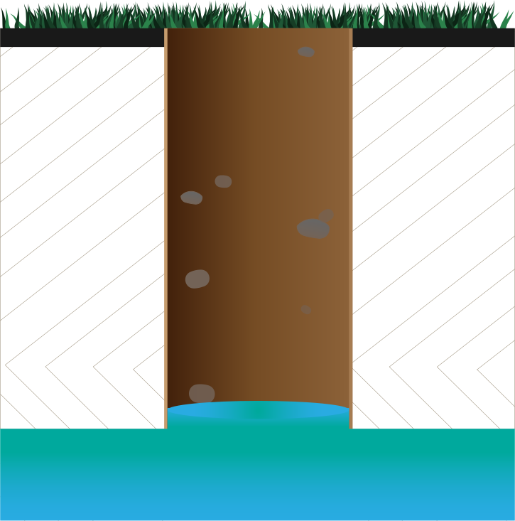
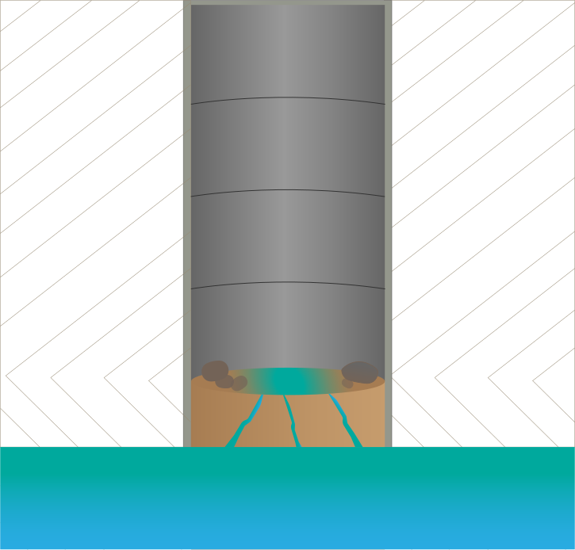
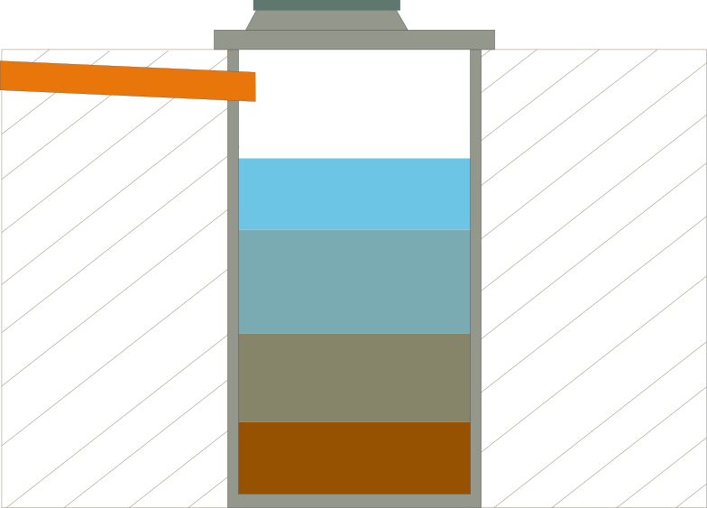

Послуги
Механічне буріння криниці

Швидкість копання криниці є досить великою, так як приблизно 3-6 годин потрібно для того, щоб викопати криницю, глибина якої складає 20 метрів
Докопка та поглиблення криниці

Докопаємо
Копання вигрібної ями

Висота не повинна перевищувати 3 метри. Це пов’язано з тим, що в подальшому асенізаційна машина повинна отримати доступ до викачування вигрібної ями.
Копаємо в наступних областях України